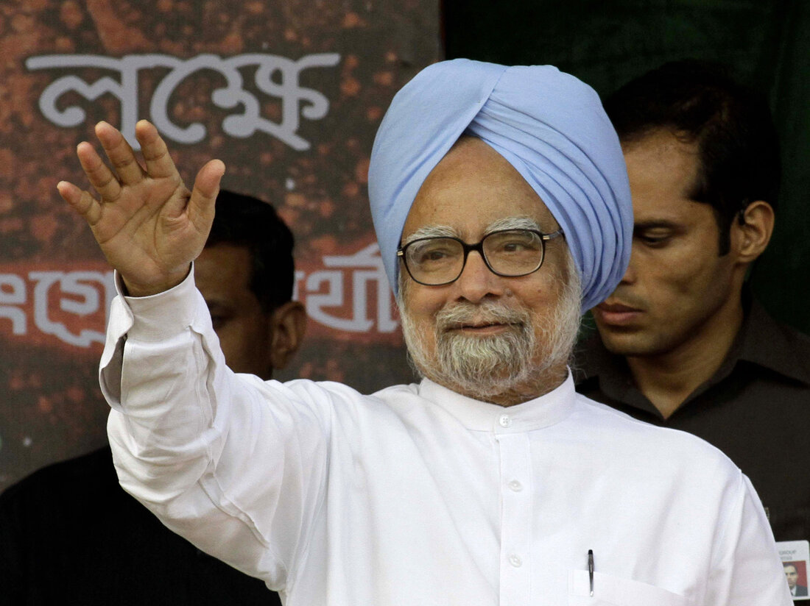

Acheivements of Dr.Manmohan Singh

-
- Economic Reforms (1991)
-
Economic Liberalization: As Finance Minister in 1991, Dr.
Singh played a pivotal role in transforming India’s economy. He
spearheaded the liberalization, privatization, and globalization
(LPG) policies, which led to the dismantling of the License Raj,
reduction in trade barriers, and the encouragement of foreign
investment.
Economic Crisis Management: During India's 1991
balance-of-payments crisis, he helped stabilize the economy by
implementing urgent reforms, including devaluing the rupee, reducing
fiscal deficits, and initiating a series of market-driven economic
policies.
-
- International Relations and Foreign Policy
-
Nuclear Deal with the United States: One of Dr. Singh's most
significant achievements was the signing of the India-US Civil
Nuclear Agreement in 2008, which allowed India to import nuclear
technology and fuel despite not being a signatory of the
Non-Proliferation Treaty (NPT).
Strengthened Ties with the US, Russia, and Other Nations: Dr.
Singh's tenure saw India's foreign relations expand, especially with
the United States, Russia, and the neighboring countries. India also
played a more prominent role in international forums such as the G20
and BRICS.
-
- Agricultural Reforms
-
Green Revolution: While not directly responsible for the
Green Revolution, Dr. Singh supported policies that encouraged
modern farming techniques, increasing food production and securing
India's food grain needs.
-
- Growth in GDP
-
High Economic Growth: Under his leadership, India's economy
grew at an average annual rate of over 7% from 2004 to 2014, making
India one of the fastest-growing major economies globally during
this period.